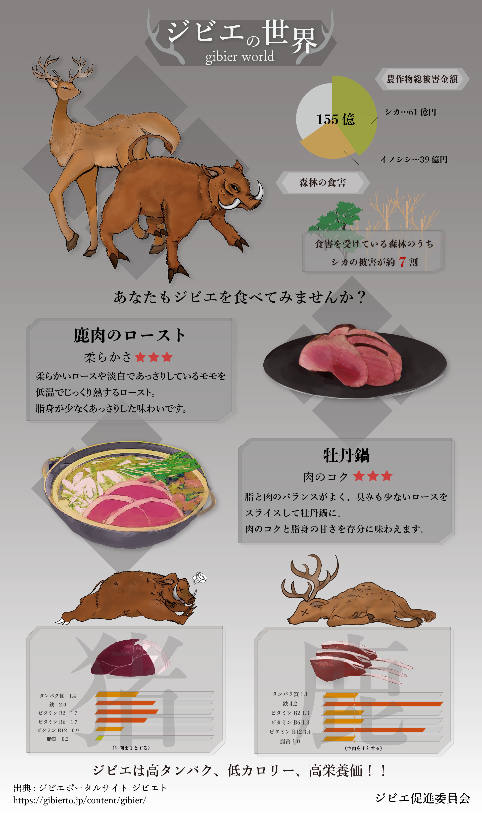

Haruka's Portfolio
WORKS
ABOUT
ジビエの世界
使用ツール
Illustrator/ Photoshop/AfterEffects
制作期間
約1ヶ月
制作意図
食に関するインフォグラフィックスというテーマで制作。
ジビエの魅力についてグラフィックとAfterEffectsを用いてインフォモーション動画を制作した。
ジビエ料理にあまり馴染みのない都心に住んでる若い人をターゲットに、ゲーム風のデザインを意識して作成した。
ゲームの雰囲気を出すためにグラフをパラメータ風にしたりウィンドウの出し方などを工夫した。
デザイン

◀︎back
top
next▶︎
© ks Portfolio